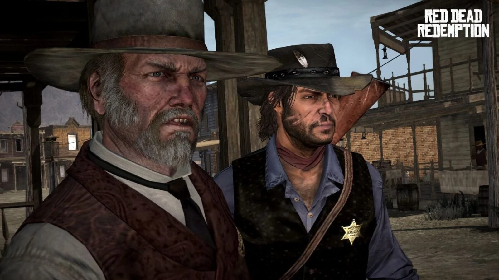
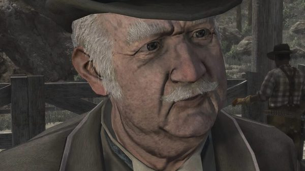
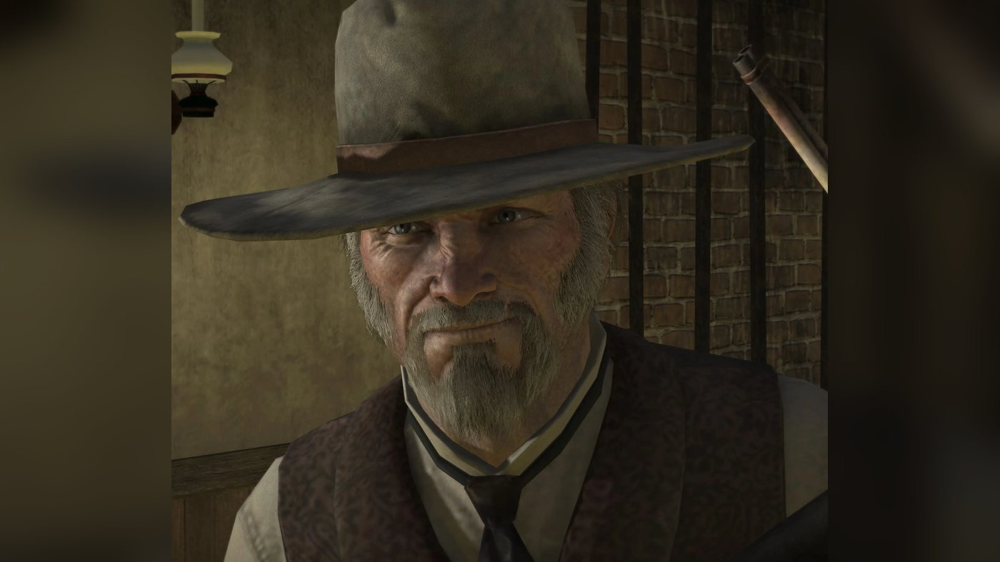
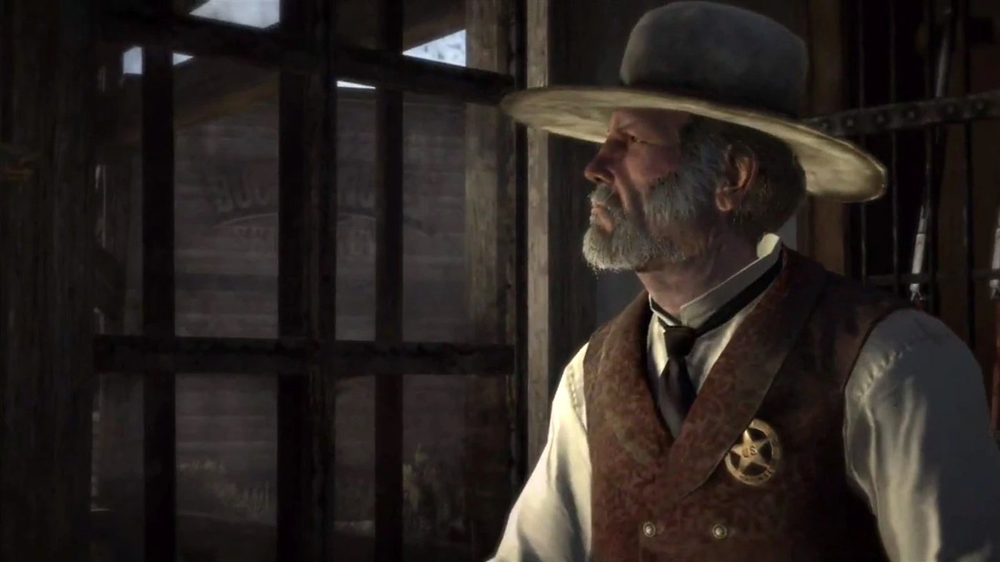
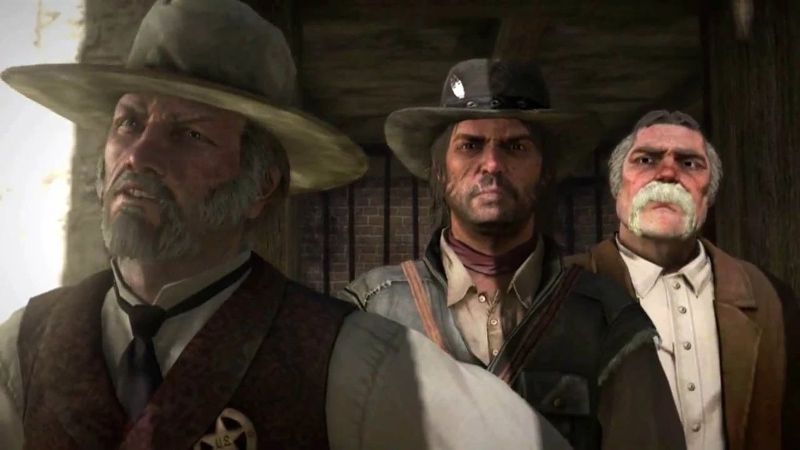
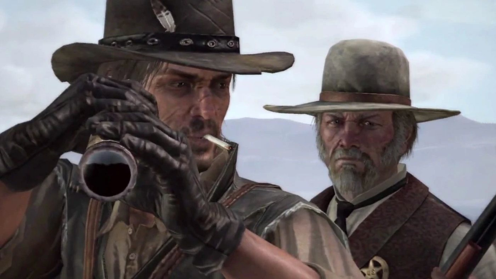
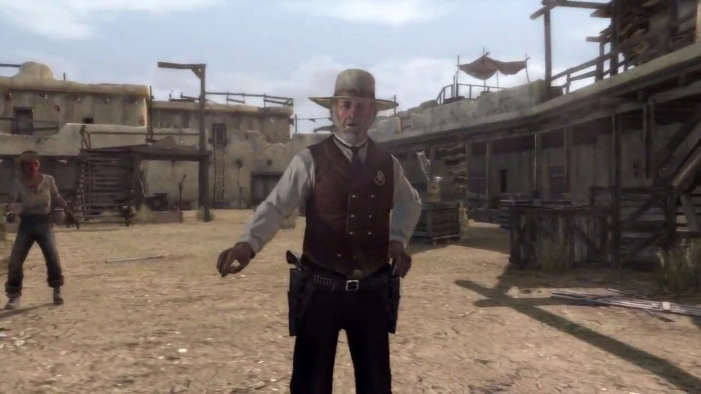

Character · Armadillo
Leigh Johnson
Leigh Johnson is the marshal of Armadillo, in New Austin, in Red Dead Redemption (2010), set in 1911. When John Marston asks him for help against Bill Williamson, John first helps him with his own problems. They track the outlaw Walton Lowe, wipe out a band of cattle rustlers at Pike's Basin and capture Norman Deek, Williamson's second-in-command, after a raid on Ridgewood Farm. When Bill's gang kidnaps Bonnie MacFarlane to free Deek, Johnson leads the posse to Tumbleweed. He then joins the assault on Fort Mercer with his deputies Jonah and Eli, but Bill has already left for Mexico.
In 1914, the last newspaper of the game reports that he has retired at 54, after 17 years as marshal. He is voiced by Anthony De Longis. He also appears in the non-canon expansion Undead Nightmare.
- Name
- Leigh Johnson; usually called the Marshal or Marshal Johnson
- Born
- Around 1860: aged 54 when he retires in 1914, according to the Blackwater Ledger & Sentinel; the Game of the Year Edition guide, quoted by the Red Dead Wiki, describes him as a 50-year-old
- Status
- Alive in 1914, retired (Blackwater Ledger & Sentinel)
- Nationality
- American
- Occupation
- Marshal of Armadillo for 17 years, until 1914
- Base
- Sheriff's office, Armadillo, Cholla Springs, New Austin
- Family
- Priscilla Johnson, his wife (died April 23, 1903, according to her tombstone)
- Deputies
- Jonah, Eli
- Weapons
- Two nickel-plated Cattleman Revolvers; Repeater Carbine, Winchester Repeater and Double-barreled Shotgun (Red Dead Wiki)
- Games
- Red Dead Redemption, Undead Nightmare; multiplayer model (Liars and Cheats)
- Voiced by
- Anthony De Longis
Biography
Origins
The games give no birth date for Leigh Johnson. An article published in 1914 gives his age as 54, which places his birth around 1860. The same article says he served as marshal of Armadillo, in the Cholla Springs county of New Austin, for 17 years, which places the start of his service around 1897. In "Political Realities in Armadillo", when John says he does not want to be a policeman, Johnson answers that he did not want to be one either. He recalls his early days in the region in "Justice in Pike's Basin" (see In his own words).
Johnson was married. His wife, Priscilla Johnson, is buried in the cemetery of Coot's Chapel, in Cholla Springs, to the left of the front entrance. Her tombstone describes her as the wife of "Marshall Leigh Johnson", gives the date of her death as April 23, 1903, and carries the epitaph "Forever smiling in our hearts." It gives no cause of death. According to the Red Dead Wiki, Johnson never mentions her in the game. By 1911, he commands two deputies, Jonah and Eli. They ride with him in every mission from "Justice in Pike's Basin" on.
Red Dead Redemption (1911)
In 1911, agents of the Bureau of Investigation hold John Marston's wife and son to force him to hunt down Bill Williamson, who holds Fort Mercer, in the neighboring county of Rio Bravo. According to the Red Dead Wiki, which dates the story from the issues of the Blackwater Ledger, John reaches Armadillo in early October 1911. Johnson appears in five missions, all in the first act. He gives each of them, from "Political Realities in Armadillo" to "The Assault on Fort Mercer", and takes no part in the events of Mexico or West Elizabeth.
Act I: New Austin
Johnson is involved before he meets John. In "Exodus in America", John's guide from Armadillo to Fort Mercer, a man named Jake, says the marshal hired him after receiving a telegram from important people in Blackwater who asked for a guide. In "Wild Horses, Tamed Passions", Drew MacFarlane says he has seen the telegram the marshal received from Blackwater, and that everyone knows who sent John. After John recovers at MacFarlane's Ranch, Bonnie MacFarlane advises him in "Obstacles in Our Path" to pay the marshal a visit about Williamson.
In "Political Realities in Armadillo", John walks into the marshal's office, where the deputy Jonah takes him for one of Williamson's men. The two are pointing guns at each other when Johnson comes in. He orders Jonah to lower his weapon and recognizes John as the man from Blackwater. He then sends Jonah out of the office. When John says he has come to capture or kill Williamson, Johnson laughs. Williamson, he explains, is outside his jurisdiction, in the next county, and his gang has stayed away from the town. His job is to keep Armadillo safe, not to clean up all three counties. He then lists his problems: the railroad (the Southwestern Railroad Company, according to the Red Dead Wiki), which pays his salary, wants him to look away while it burns down settlements; cattle rustlers need dealing with near a box canyon; a gang keeps murdering homesteaders in the back country; and a band of drunk hoodlums in the saloon is threatening to shoot up the town.
John offers to deal with the hoodlums first. Johnson identifies their leader as Walton Lowe, whose gang robs the stagecoaches coming in and out of town; he admits he has let them drink in the saloon rather than rob travelers. Walton rides out as they arrive, and Johnson and John follow him alone. Johnson refuses to shoot him on the spot: that is not how the law works, he says, and a living prisoner can talk. He adds that Walton's gang is growing and operates across Cholla Springs and Gaptooth Ridge.
At Pleasance House, the gang spots them and Johnson orders John to take cover and work his way up the hill. Depending on the player, John kills Walton or takes him alive, by shooting him in the leg or with the lasso. Johnson compliments John's shooting and invites him to call on him next time he is in town. According to the Red Dead Wiki's page on Walton Lowe, the marshal accepts his death if John kills him, and takes him to the Armadillo jail if he is captured. In both cases, Blackwater Ledger No. 54 reports that Walton Lowe, aged 30, has died by gunshot and will be missed by nobody.
In "Justice in Pike's Basin", John finds Johnson struggling with the office's new telephone line, Armadillo 731. Johnson tells him that things have got away from him and that he no longer understands them. Eli runs in to report that four men, the Bollard Twins and two Mexicans by his account, are rounding up Mr. Gulch's livestock in the canyon. Johnson asks John to ride with them, and John agrees on the condition that the marshal helps him in return. On the way, Johnson reveals that federal agents in Blackwater have sent him a telegram saying John works for the government. He tells John he dislikes this federal interference, and mocks the idea that city men who have never worked a farm can understand New Austin.
At Pike's Basin, Johnson has his men dismount, warns them they will probably be outnumbered, and tells them to take the rustlers alive if they can and to kill them if they cannot. Snipers are waiting for them. At a fork, Johnson takes the right-hand path and the deputies the left; the player chooses which side John follows. The posse wipes out the gang and frees Mr. Gulch's ranch hands, who thank the marshal; he tells them to get the cattle back safely. When John raises Williamson again, Johnson promises to do what he can. Eli then reports that Nigel West Dickens, the tonic seller, has gone missing. Johnson dismisses him as a peddler of narcotics, and remarks to John that the town cares more about a missing salesman than about the gang they have just wiped out.
In "Women and Cattle", Bonnie tells John she has heard from Johnson that he plans to settle in the area and build a life there; John says those are not his plans. In "Spare the Rod, Spoil the Bandit", Johnson and his deputies are getting their rifles ready when John arrives, and the marshal asks him for another gun. For months, he explains, a group of bandits has been getting drunk and murdering settlers. The night before, they attacked a large property near Ridgewood. Eli adds that they burned the place and killed its people, and that one survivor walked into town that morning. A posse is gathering near Ridgewood. John agrees to ride, and Johnson warns him the job will be bloody. Besides John, Eli and Jonah, the lawman Dell Hopkins rides in the posse.
On the way, Johnson mentions that he has heard John found West Dickens in the meantime. Vultures lead the posse to two camps full of corpses; at the second, the fire is still smoking. Johnson says that a pack of weak men and cowards is the most dangerous kind, and notes that they have spilled a lot of blood fighting Walton's gang and the rustlers, and that a man grows more evil when he is running scared. When Jonah asks John about his own past in a gang, Johnson says that killing and stealing are never right. At Ridgewood Farm, he senses something is wrong and has the posse search the grounds. He tells John to shoot open the boarded-up barn door, behind which they find several bodies, one of them hanging from the rafters, and a woman who says her family is held hostage in the farmhouse. The posse storms the house and frees the survivors.
One of the survivors, a woman, accuses the marshal of failing to protect them and calls him a man on a government payroll. Johnson orders the posse to mount up and offers fifty dollars to whoever kills the gang's leader; the woman answers that it is not about money. On the road, Eli wonders whether the bandits are heading for Fort Mercer, and Johnson answers that it may be, and that it looks like the work of Williamson's men. Johnson spots someone on the cliffs: Williamson, who warns John off, then sends his men to attack. Johnson orders everyone into a shed; according to the mission page, they take cover in the ruins of Mercer Station. After the fight, Jonah finds Norman Deek, Williamson's second in command, still alive. Johnson greets Deek by name and says he is glad to see him again. He thanks John and says Deek will help them get to Bill. He then has Deek hogtied and taken to jail.
Issue No. 55 of the Blackwater Ledger reports the massacre. Its article "Massacre at Ridgewood Farm" says that Armadillo lawmen "stormed the farmhouse, defeated the criminals and freed the survivors". The paper adds that the Williamson gang's involvement is still unconfirmed. If the gang was not responsible, it writes, "beleaguered Armadillo Marshal Leigh Johnson has another serious problem on his hands".
In "Hanging Bonnie MacFarlane", Drew MacFarlane is at the marshal's office: Bonnie has not been seen since the previous afternoon, and he suspects John. Johnson tries to calm him. A rider from Williamson's gang calls the marshal out into the street. Johnson orders him off his horse and threatens to shoot, but the rider says the gang holds Bonnie and wants Norman Deek released in exchange, at Tumbleweed, within a couple of hours. Johnson tells him the law does not bargain with outlaws, then asks where she is. Once the rider has gone, Johnson asks what they should do; John answers that they must do as he says. Jonah carries the hogtied Deek out of the office, and Johnson keeps John at his side.
On the ride, Johnson blames the kidnapping on federal interference; when John says again that he does not work for the government, Johnson answers that he knows who sent him. He says the federal men promise peace and civilization but bring only trouble and taxes. He speaks of Deek with contempt, as a man unfit to lead the gang. Asked about their destination, he explains that Tumbleweed was a real town until the railroad reached Armadillo and bypassed it; its people left, and it is now a haunt of thieves, smugglers and bandits, and a common place for lynchings. He says he hopes John is not taking advantage of the MacFarlanes, whom he describes as vulnerable. He says he trusts John, but has doubts given his past, and calls it madness to send an outlaw to do a lawman's work.
The two men then argue about the law. Johnson holds that there must be rules, that without laws men are animals, and that a child who misbehaves should be punished harder each time. John replies that laws are of little use if people do not understand them, and asks why university men in the East should decide how people live in Armadillo; Johnson concedes he may be right on that point. At Tumbleweed, Johnson has John lead Deek into the middle of town for the exchange, warning that he doubts the gang will play fair. The gang's Kent Gallaway refuses any deal and shoots Deek; Johnson shouts that it is a trap and orders the posse to take cover and find Bonnie. John saves her from the noose. According to the Red Dead Wiki, Johnson then takes her back to Armadillo. Blackwater Ledger No. 55 reports that she escaped hanging after a shootout between Armadillo lawmen and Williamson's gang, and announces the death of Norman Deek, aged 34, in the gun battle.
"The Assault on Fort Mercer" brings together John, Johnson, his deputies Eli and Jonah, Nigel West Dickens and Seth Briars, who is already inside the fort; Irish supplied the Gatling gun but misses the fight. According to the mission page, an unnamed deputy also takes part. On a hilltop overlooking the fort, John tells Johnson that all he cares about is Williamson, and the marshal agrees that the man is a stone-cold killer. The deputies shut John in the back of Dickens's wagon, which carries the Gatling gun. Seth welcomes the wagon at the gate, Dickens raps on its side, and John opens fire, clearing the way for the lawmen. Johnson leads them through the fort and regroups them. Finding no trace of Williamson, he orders them to tear the place apart. When Dickens returns to the gate, Johnson has it opened and locked behind him. Reinforcements arrive, and John stops them with the Gatling gun.
Williamson is not in the fort. Jonah brings in a captured gang member and reports that, according to the prisoner, Bill left for Mexico the morning before. The prisoner adds that Bill went somewhere near Chuparosa. John concludes that he has gone to join Javier Escuella, and Irish offers to take him south. Johnson apologizes to John and says he supposes John will now be heading to Mexico. John says goodbye to Dickens, then to the marshal. According to the mission page, this is Johnson's last appearance in Red Dead Redemption. Blackwater Ledger No. 56 reports the battle in "Shoot Out at Fort Mercer". The paper says the gang appears to be finished. Williamson's body has not been found, and he is thought to have escaped to Mexico. The article says that the marshal led the raid and was commended for his bravery.
The 1914 newspaper
Act III: West Elizabeth
Johnson's later life is told in issue No. 213 of the Blackwater Ledger & Sentinel, dated 1914, which becomes available after "The Last Enemy That Shall Be Destroyed", John's last mission, once Jack Marston is the playable character. Its article "Marshall Johnson of Armadillo Retires" reports that he has retired at 54, after 17 years as town marshal. It credits him with bringing down some of New Austin's most notorious outlaws: Walton's Gang, the Two Crows Boys, One-Lung Lester Riley, the Bollard Twins and Wildcat Willie. The townspeople threw him a farewell party at the saloon. He arrested three men there and, according to the paper, was still on his feet when it ended. He told the paper he intended to settle as far from Armadillo as he could. He is alive at the end of the game.
Undead Nightmare (non-canon)
Undead Nightmare, an expansion released in October 2010, is not part of the series' canon. In it, Armadillo is overrun by the undead and its survivors hide on the rooftops. Johnson appears in the side mission "Dinner for Two", available once John has completed "Curious Tales from Blackwater" and cleared Armadillo of the undead. According to the mission page, John enters the marshal's office as an undead prisoner in a cell is about to devour a living one; when the living man is bitten, Johnson shoots them both. He tells John that the town has nearly been overrun and that the world has fallen into chaos. According to the Red Dead Wiki's page on Armadillo, he says the undead keep attacking, then disappear for a while before coming back.
Johnson has sent his deputies, Jonah and Eli, out into the town, and they have not come back; the Red Dead Wiki's page on the expansion says they have been missing for a few hours. When John offers to look for them, Johnson hands him a sawed-off shotgun, which belonged to Jonah according to the character page. John finds the two deputies at the stables behind the saloon: both have turned, and Eli is eating Jonah. They attack John, who kills them. Back at the office, Johnson asks whether it was quick and whether they died happy, and John jokes that they died on a full stomach, or at least one of them did. Johnson accepts the news, and John keeps the shotgun. Johnson plays no further part in the story.
Personality
The Red Dead Wiki quotes the Game of the Year Edition guide of Red Dead Redemption: "He is a 50-year-old ageing cynic. This good ol' boy would be considered a southern gentleman. He is good with words, but he is slowly being defeated by the pressures facing him in the West. He has been showing signs of cracking up, but he still tries his best to maintain a dignified facade."
His view of his duty (the town first, lesser outlaws tolerated, prisoners taken alive) comes out in his missions (see Biography). He calls younger men boy or son and addresses John as Mr. Marston, then John. He mocks his deputy Eli and Nigel West Dickens with dry, sarcastic remarks (see Relationships). He distrusts the federal government and the men it sends from the East.
In his own words
To John, at their first meeting in "Political Realities in Armadillo": "Well, I ain't happy, but I also ain't suicidal." Then: "My cause is to keep this town from turning into a living hell for the folks who live here. Whole world has problems, mister, and I'm here, doing what I can." At his desk, in "Justice in Pike's Basin": "I remember when we first got here, we used to consider people from Dade County to be exotic. Now guys can get here from the Midwest, and they can do it in six days."
On the law, in "Spare the Rod, Spoil the Bandit": "Killing and thieving's never right, boy, no matter how you dress it up." On the road to Tumbleweed, in "Hanging Bonnie MacFarlane": "Criminals are like weeds, Marston. Quick as you stomp one out, another one sprouts up in its place."
Names and title
Most characters call him the Marshal or Marshal Johnson. Jonah answers him with "Yes, sir, Mr. Johnson, sir", and Eli also calls him Mr. Johnson. Bill's messenger hails him from the street with "Oh, Mister Marshal". His full name is spoken by Jake, the guide who escorts John at the start of the game, when he says who hired him (the exchange is under Quotes). Bonnie also uses it in "Women and Cattle": "Yes, from Leigh Johnson." Wikipedia's summary of the game calls him a U.S. Marshal; the Red Dead Wiki calls him the district marshal. In 1914, the Blackwater Ledger & Sentinel calls him a "Legendary Armadillo Marshal" and says he served as "town marshal" for 17 years.
Appearance
He is a man in his fifties with a lined face, pale eyes, gray hair and a full gray beard that ends in a long goatee; according to the Red Dead Wiki, the beard has a slight yellow tinge. He wears a wide-brimmed gray hat with a brown band, a light shirt with a dark necktie and a dark patterned vest, with the marshal's badge on his chest.
Relationships

John Marston
Johnson agrees to help John against Bill Williamson in exchange for help with his own problems (see Biography). After the shootout at Pleasance House he compliments his aim and invites him to check in next time he is in town. When John says he does not want to be a policeman, Johnson answers that he did not either (the exchange is under Quotes). On the ride to Pike's Basin, he suspects John of working for the government because of a telegram from federal agents in Blackwater. John denies it, and tells the deputies he came because it was made impossible for him not to. On the road to Tumbleweed, John says again that he was given no choice.
On that same road, Johnson says he hopes John is not taking advantage of the MacFarlanes, then admits: "I trust you. It's just, all this business with Blackwater and Williamson and the past. I don't know...sometimes it's hard not to have doubts." The two men argue about the law: Johnson defends punishment and fixed rules, John says the law is not working (see Biography). After Fort Mercer, Johnson apologizes to him before they part. In Undead Nightmare, which is not canon, John offers to look for the missing deputies (see Biography).
Jonah
His deputy, who rides with him from "Justice in Pike's Basin" to Fort Mercer. At John's first visit, Jonah takes him for one of Williamson's men and draws on him until the Marshal orders him to lower his gun and leave the room (see Biography). When Jonah needles John on the way to Pike's Basin, Johnson cuts him off: "Simmer down, Jonah." According to the Red Dead Wiki, Jonah wears a faded red shirt and a bowler hat and claims Irish heritage. In Undead Nightmare, which is not canon, Johnson gives John Jonah's sawed-off shotgun (see Biography).
Eli
His other deputy. Johnson sends him to spy on the rustlers at Pike's Basin and mocks his sarcasm and his lazy eye when Eli reports back (the line is under Quotes). Eli defends Nigel West Dickens and his tonic against the Marshal and John (see Nigel West Dickens below). At Fort Mercer, he calls for the gate to be opened for Dickens, and Johnson orders it opened and locked behind him. In Undead Nightmare, which is not canon, Eli and Jonah go missing in Armadillo (see Biography).
Priscilla Johnson
His wife, who died in 1903 and is buried at Coot's Chapel (see Biography).

Bonnie MacFarlane
In "Obstacles in Our Path", Bonnie advises John to pay the Marshal a visit in Armadillo about Bill Williamson. In "Women and Cattle", she has heard from Johnson that John plans to settle in the area. When Bill's gang kidnaps her, Johnson leads the posse to Tumbleweed (see Biography). For her mention of him in Red Dead Online, see Other media.
Drew MacFarlane
Bonnie's father comes to the Marshal's office when she disappears and accuses John (see Biography). Johnson tries to calm him: "Now Drew, nobody's lost anything yet."

Bill Williamson
At their first meeting, Johnson tells John that Williamson is outside his jurisdiction (see Biography). Bill's men raid Ridgewood Farm and take Bonnie hostage to free Norman Deek (see Biography). Before the assault on Fort Mercer, Johnson agrees with John that Bill is a stone-cold killer (the line is under Quotes). Bill has already left for Mexico when the posse takes the fort (see Biography).
Norman Deek
Williamson's second-in-command, captured by Johnson's posse after the raid on Ridgewood Farm (see Biography). Johnson calls him "a glorified errand boy" and judges him too cowardly and too stupid to lead (the full line is under Quotes). Tied to a horse on the way to Tumbleweed, Deek threatens to come back for the marshal (see Quotes).
Walton Lowe
The leader of the gang Johnson and John pursue in "Political Realities in Armadillo" (see Biography). When Walton rides out of the saloon, Johnson points him out ("There's the dumb rat-bastard now.") and follows him to Pleasance House. He refuses to shoot him on sight: "Because that ain't how the law works." He adds: "And alive, he can still talk." According to the Red Dead Wiki, Walton shouts to his men that whoever kills the Marshal keeps his badge.

Nigel West Dickens
When Eli reports Dickens missing in "Justice in Pike's Basin", the Marshal dismisses him as a peddler of narcotics who cheats housewives, and complains that the town cares more about him than about the gang just wiped out (both lines are under Quotes). In "Spare the Rod, Spoil the Bandit", he settles on: "He's certainly a character, that West Dickens." At Fort Mercer, Dickens drives the wagon that gets John inside while Johnson and his deputies wait for the shooting to start (see Biography).

Seth Briars
Seth is part of the Fort Mercer plan and is already inside the fort when Johnson's posse waits on the hill (see Biography). The two men share no dialogue in the game.

Irish
Irish supplied the Gatling gun used at Fort Mercer but arrives once the fighting is over (see Biography). He and Johnson share no dialogue in the game.
Jake
John's guide in "Exodus in America", hired by the marshal (see Biography; the exchange is under Quotes).
The people of Armadillo
A survivor of the Ridgewood Farm raid rebukes him in front of the posse (see Biography; the exchange is under Quotes). According to the Red Dead Wiki, many townspeople speak ill of him. The quote list of Baxter Deaton, manager of the Bank of Armadillo, includes "They say that Marshal Johnson's buried stolen goods out at Río del Lobo", "I heard the gang at Twin Rocks is in cahoots with Marshal Johnson" and "Marshal Johnson's up at Pleasance House, living it up with the other crooks." Another of his lines names no one: "A certain Marshal around these parts has been seen beatin' women folk." According to his wiki page, Deaton admits that most of his rumors are made up. Mel Thaxton, a lawman who patrols Armadillo, complains in the saloon in 1911 and in 1914: "The Marshal's an idiot, that's this place's problem." His quote list also has "This whole organization stinks! And the Marshal's to blame." The wiki adds that Jeb Murphy, Eldin Grubb and Herbert Moon criticize him, and that people at MacFarlane's Ranch say he has the whole world on his shoulders.
Law enforcement, weapons and horses
A marshal's methods
Johnson works from the Sheriff's office in Armadillo, which also holds the town jail. He handles small cases with his two deputies. For larger operations, he raises a posse of local lawmen and leads it in the field himself. Each operation is told in the Biography.
In the game
Johnson gives five story missions in the first act of Red Dead Redemption and one side mission in Undead Nightmare; the Missions table lists them. At Pike's Basin, the player can follow the deputies or stay with the Marshal and cover him. According to the Red Dead Wiki, he can be killed after "Hanging Bonnie MacFarlane": if John uses Dead Eye on the horses as Johnson and Bonnie ride away, both fall to the ground. Kotaku (Owen Good, August 17, 2010) gave the same tip: shoot his horse after that mission and he walks away on foot.
Undead Nightmare (non-canon): after "Dinner for Two", Johnson stays at his desk, busy with the telephone and his papers according to the Red Dead Wiki. According to the mission page, he can be killed, for example with the shotgun he gave John, fired through the window close to his head.
Weapons and horses
He carries a pair of nickel-plated Cattleman Revolvers in a gun belt with two holsters; according to the Red Dead Wiki, only Norman Deek, Enepay and Benton Manning share this belt in the game. According to the Red Dead Wiki, he fires both only in cutscenes and a single one during gameplay; the "Dinner for Two" mission page also notes that he uses one revolver there. The wiki lists a Repeater Carbine, a Winchester Repeater and a Double-barreled Shotgun among his weapons. The Red Dead Wiki gives him a Standardbred Pinto as his mount, and its trivia adds that he rides a Tersk in "Political Realities in Armadillo" and dismounts from a Kentucky Saddler in "The Assault on Fort Mercer".
Missions
Leigh Johnson has a strand of five story missions in the first act of Red Dead Redemption, all in New Austin, numbered 8, 9, 11, 23 and 24 in the story order. The first, "Political Realities in Armadillo", becomes available after Bonnie MacFarlane's "Obstacles in Our Path". It introduces cover, bounty hunting and fast travel from a campsite, and unlocks the bounty hunting jobs and the stranger missions "American Appetites" (part 1) and "Water and Honesty". "Justice in Pike's Basin" introduces basic ranged combat, opens the Pike's Basin gang hideout and unlocks Nigel West Dickens's strand. "Spare the Rod, Spoil the Bandit" requires "Women and Cattle" and "Old Swindler Blues"; "Hanging Bonnie MacFarlane" requires "The Burning". "The Assault on Fort Mercer", the last mission of New Austin, requires the strands of Johnson, Dickens, Seth Briars and Irish, introduces mounted weapons and the Gatling gun, and leads to "We Shall Be Together in Paradise", the first mission in Mexico. According to the Red Dead Wiki, every mission of his strand except "The Assault on Fort Mercer" begins in his office in Armadillo. In Undead Nightmare, Johnson gives one side mission.
Appearances
| Mission | Act | Johnson's role |
|---|---|---|
| Political Realities in Armadillo | Act I: New Austin | Mission giver. Meets John, then tracks Walton Lowe with him to Pleasance House. Rewards: 20 dollars, 75 fame (125 with the gold medal) and 200 honor. |
| Justice in Pike's Basin | Act I: New Austin | Mission giver. Leads John and his deputies against the Bollard Twins gang to recover Mr. Gulch's cattle. Rewards: 25 dollars, 150 fame (200 with the gold medal) and 100 honor. |
| Spare the Rod, Spoil the Bandit | Act I: New Austin | Mission giver. Leads the posse to Ridgewood Farm, then after Williamson's men; captures Norman Deek. Rewards: 50 dollars, a Winchester Repeater if John has none, 250 fame (300 with the gold medal) and 200 honor. |
| Hanging Bonnie MacFarlane | Act I: New Austin | Mission giver. Receives the gang's demand at his office and leads the exchange of Norman Deek at Tumbleweed, which turns into an ambush. Reward: 150 fame (200 with the gold medal). |
| The Assault on Fort Mercer | Act I: New Austin | Mission giver. Leads his deputies inside the fort once John has opened fire; Williamson has already left. His last appearance in the story. Rewards: 50 dollars and 150 fame (200 with the gold medal). |
| Dinner for Two | Undead Nightmare | Mission giver. Asks John to find his missing deputies, Jonah and Eli. Reward: a Sawed-off Shotgun. |
Missions in which he is mentioned
| Mission | Act | Link with Johnson |
|---|---|---|
| Exodus in America | Act I: New Austin | John's guide, Jake, says the marshal hired him after a telegram from Blackwater. |
| Wild Horses, Tamed Passions | Act I: New Austin | Drew MacFarlane says he has seen the telegram the marshal received from Blackwater. |
| Obstacles in Our Path | Act I: New Austin | Bonnie advises John to see the marshal about Williamson. |
| Women and Cattle | Act I: New Austin | Bonnie has heard from Johnson that John plans to settle in the area. |
Quotes
The lines below are given in the original English. Mission lines are checked against the mission transcripts of the Red Dead Wiki. The Undead Nightmare lines come from the wiki's quote list and mission page, as no transcript exists for the expansion's missions.
What others say about him
Jake: Ain't we all? Yeah, so it was the Marshal who hired me. Leigh Johnson, do you know him? / Marston: I think I heard his name. / Jake: Says he got a telegram from some Blackwater big bugs askin' for a guide.
Exodus in America (RDR1, Act I), on the road to Fort MercerThey ain't theories, Mr. Marston. I saw the telegram the Marshal got from Blackwater. It ain't exactly a state secret who sent you.
Drew MacFarlane, Wild Horses, Tamed Passions (RDR1, Act I)You know, you should go pay the Marshal a visit in Armadillo sometime. I'm sure he could help you deal with that nice Mr. Williamson.
Bonnie MacFarlane, Obstacles in Our Path (RDR1, Act I)Woman: I thought you were supposed to protect us, Marshal? You folk ain't men. You ain't nothing. You're just some man on a government payroll, taking money that the rest of us have to pay for with our lives! What is wrong with this country? / Leigh: Mount up, men. The man that kills the boss of that bunch gets fifty dollars. / Woman: It ain't about the money, Marshal. These are people's lives. People's homes!
A survivor of Ridgewood Farm, Spare the Rod, Spoil the Bandit (RDR1, Act I)Marshal: Get down from that horse, boy, or I'll shoot. / Outlaw on Horse: I wouldn't recommend that, mister. Not if Drew MacFarlane wants to see his Bonnie back in one piece.
Hanging Bonnie MacFarlane (RDR1, Act I), outside the marshal's officeOutlaw on Horse: I want Norman Deek. I want him set free. Then you get your daughter back, mister. / Marshal: We don't do deals with outlaws, boy.
Hanging Bonnie MacFarlane (RDR1, Act I), the gang's demandYou wait, Marshal. I'll be back for you.
Norman Deek, Hanging Bonnie MacFarlane (RDR1, Act I), tied onto a horse on the way to TumbleweedWhoever kills the Marshal gets to keep the badge!
Walton Lowe, Red Dead Redemption (RDR1, Act I), according to the quote list of his page on the Red Dead Wiki
Red Dead Redemption, Act I
Johnson: What's going on here? / Jonah: I got me one of them Williamson boys. / Marston: And I got me one of them idiots who give marshals a bad name.
Political Realities in Armadillo (RDR1, Act I), on entering his officeJohnson: What are you doing here Mr. Marston, apart from frightening my deputies? / Marston: I'm here to capture or kill Bill Williamson. / Johnson: Okay.
Political Realities in Armadillo (RDR1, Act I), Johnson laughing at the answerMarston: And you're happy to let them drink in your saloon? / Johnson: Happy? No. But the way I figure it, better they're carousin' in there than out robbin' decent folk. / Marston: That's an interesting approach to law enforcement.
Political Realities in Armadillo (RDR1, Act I), about Walton's gangMarston: I don't want to be no policeman, Marshal. / Johnson: Nor did I, my friend. I can promise you that. I'll see you soon, Mr. Marston.
Political Realities in Armadillo (RDR1, Act I), at Pleasance HouseLeigh: I have no idea. If it's important, they'll send someone down like they did with you. / John: Suddenly, the world is full of "Theys".
Justice in Pike's Basin (RDR1, Act I), at the telephoneEli: Well, it was a group of four men rounding up Mr. Gulch's livestock and none of them looked like Mr. Gulch's hands, so yes, sir. Right now. / Leigh: That sarcasm's most unbecoming, Eli. It's going to hold you back in life, even worse than your lazy eye. Alright, let's go. You ride with us again, Marston?
Justice in Pike's Basin (RDR1, Act I), when Eli reports the rustlersLeigh: How long you been workin' for the government, Marston? / John: I don't work for the government. / Leigh: Well, I got a telegram from some federal clowns in Blackwater that says otherwise.
Justice in Pike's Basin (RDR1, Act I), on the ride to the canyonLeigh: I'll do what I can. You know, as you can see, this country is infested with all manner of scum. / John: You can say that again.
Justice in Pike's Basin (RDR1, Act I), when John raises Williamson after the fightEli: Mr. West Dickens, the tonics merchant. He was due in town last week. / Leigh: Oh, the narcotic and bat piss salesman who cons housewives out of their money with promises of eternal youth.
Justice in Pike's Basin (RDR1, Act I), after the fightYa hear that, Marston? We just butchered a gang of thieves and the town is up in arms about a missing snake oil salesman? I'm so glad to be serving such a wise and respectable people. Come on, Eli.
Justice in Pike's Basin (RDR1, Act I), after Eli defends West DickensLeigh: Thank you, John Marston. It's gonna be a bloody job. / Marston: I don't think I know any other kind, sir.
Spare the Rod, Spoil the Bandit (RDR1, Act I), when John agrees to ride to RidgewoodNice to see you again, buddy. Thanks for your help, John. Norman here's gonna help us get to Bill. Ain't you, Norman?
Spare the Rod, Spoil the Bandit (RDR1, Act I), on finding Norman Deek aliveMarshal: They come down here, dressed as cocky as the king of diamonds, talkin' a lot of flannel about helpin' us, about spreadin' peace and civilization to the West, but they've brought nothin' but trouble and taxes. / Marston: I agree with you. Wolves in sheep's clothing, all of 'em.
Hanging Bonnie MacFarlane (RDR1, Act I), about the federal agentsMarshal: Deek's the kind of man who's mean enough to be second-in-command but too cowardly and stupid to ever be a leader. / Marston: Don't ever use that line near your deputies.
Hanging Bonnie MacFarlane (RDR1, Act I), on the way to TumbleweedTumbleweed? A lonely, godforsaken place. Some people say it's haunted. It was quite a town, back in its day. Then they build the railroad in Armadillo and went clean past Tumbleweed. And that was that.
Hanging Bonnie MacFarlane (RDR1, Act I), when John asks where they are headedMarshal: How was this mess supposed to turn out? Sendin' an outlaw to do the work of a lawman? That's madness. / Marston: Ain't much difference between the two, as far as I can tell. / Marshal: There have to be rules, Marston. Even you must understand that.
Hanging Bonnie MacFarlane (RDR1, Act I), on the way to TumbleweedMarston: The problem with laws is, everybody ain't the same. And why should a bunch of rich university boys in the East get to decide how a man in Armadillo should live his life? / Marshal: Ughh, well maybe you're right about that.
Hanging Bonnie MacFarlane (RDR1, Act I), end of the argument about the lawMarston: All I care about is Williamson. It is vital we stop him. / Marshal: Agreed. That man is a stone-cold killer.
The Assault on Fort Mercer (RDR1, Act I), on the hilltop before the assaultMarshal: I'm sorry about this, John. I guess you'll be heading to Mexico. / Marston: So it would seem. How is it down there?
The Assault on Fort Mercer (RDR1, Act I), his last exchange with John
Undead Nightmare (non-canon)
Cattle rustlin' and bank robbery are at an all time low. While murder, blood drinking, and psychotic episodes seem to be somewhat prevalent. Either that, or I'm dreaming.
Undead Nightmare, on the state of Armadillo (quote list of the wiki)It was fast and they died with their bellies full. Well, one of 'em did.
John Marston to Johnson, Dinner for Two (Undead Nightmare), about Jonah and Eli (quote box of the mission page)
Development and performance
Casting
Leigh Johnson appears in Red Dead Redemption and its expansion Undead Nightmare, both released in 2010. Wikipedia credits Anthony De Longis with the role in both games. According to Wikipedia, De Longis is an American actor, stuntman and fight choreographer, born on March 23, 1950 in Glendale, California. His other roles include Blade in the film Masters of the Universe (1987) and the Kazon leader Jal Culluh in Star Trek: Voyager. A weapons master, he taught Michelle Pfeiffer the bullwhip for Batman Returns (1992) and gave Harrison Ford whip training for Indiana Jones and the Kingdom of the Crystal Skull (2008). No source consulted names a performer for Johnson's motion capture.
A first actor replaced
On August 17, 2010, Kotaku (Owen Good) relayed an account by the actor Colin Nissan, written for the blog of The Paris Review under the title "Searching For Me In Red Dead Redemption". Nissan had been cast as the Marshal and recorded his lines over two hours at Rockstar's studio in SoHo. According to the article, the Marshal appeared in a trailer two months before the game's release without Nissan's voice. When the game came out, Nissan found that the character spoke with another actor's voice.
Reception
Character lists
In a list of the ten best characters of the Red Dead Redemption franchise, published by Sportskeeda (page last modified on August 13, 2023), Aniket Mukherjee ranked Marshal Leigh Johnson seventh, between Seth Briars (eighth) and Nigel West Dickens (sixth). The author cited "his commitment to maintaining law and order in a chaotic frontier" and wrote that "His partnership with John Marston adds an interesting dynamic to the story." No other review or article dedicated to the character was found.
Other media and legacy
The Man from Blackwater (2010)
Johnson appears in Red Dead Redemption: The Man from Blackwater, a short film made with the game's engine, directed by John Hillcoat and broadcast by Fox on May 29, 2010, then by 5USA in the United Kingdom on June 5, 2010. Its story covers the first act, up to the attack on Fort Mercer by John, the marshal, his deputies Jonah and Eli, Nigel West Dickens and Seth Briars. It reuses his first meeting with John and Jonah from "Political Realities in Armadillo", and the Ridgewood Farm massacre and the confrontation with Williamson from "Spare the Rod, Spoil the Bandit". During John's talk with the marshal, the film inserts flashbacks absent from the game. One of them shows John, Bill and Javier Escuella robbing the Blackwater bank in their Dutch van der Linde days.
Multiplayer
Johnson became a playable character model in the multiplayer mode of Red Dead Redemption with the Liars and Cheats Pack, detailed by Rockstar on August 27, 2010 and released on September 21, 2010. Players select him in the Redemption section of the Outfitter, alongside John, Abigail, Jack, Bonnie MacFarlane, Luisa Fortuna, Nigel West Dickens and Seth Briars. The same pack added Grand Prix horse races; the third race of the Carreras Perdido Cup is named L. Johnson's Run, and according to the Red Dead Wiki it starts and ends in Armadillo. The versions of Red Dead Redemption released on PlayStation 4 and Nintendo Switch on August 17, 2023, then on PC on October 29, 2024, do not include the multiplayer mode.
Marketing
Rockstar released official artwork of Johnson for Red Dead Redemption. According to the Red Dead Wiki, a promotional image shows him crumpling a bounty notice in his hand, on which the hideout of the target, Campo Mirada, can be made out.
Red Dead Redemption 2 and Red Dead Online
Johnson does not appear in Red Dead Redemption 2. In its 1907 epilogue, Armadillo, emptied by a cholera outbreak, has a sheriff named Palmer, who resigns or is shot by the Del Lobo Gang depending on the player's intervention. According to the Red Dead Wiki, the game mentions briefly that Johnson is away because of the cholera outbreak, like most of the town's residents. Also according to the wiki, in Red Dead Online, set in 1898, Bonnie MacFarlane mentions him when she starts a recovery mission, saying she hopes he can come back as he is away because of the cholera outbreak.
Trivia
Red Dead Redemption
- The in-game texts spell his title "Marshall" with a double l: his wife's tombstone at Coot's Chapel, the 1911 article "Shoot Out at Fort Mercer" and the 1914 headline "Marshall Johnson of Armadillo Retires".
- According to the Red Dead Wiki, he wears a United States Marshal badge, yet he tells John that Williamson, in the next county, is outside his jurisdiction; his missions still take him to Tumbleweed in Gaptooth Ridge and to Fort Mercer in Rio Bravo.
- According to the mission page of "Hanging Bonnie MacFarlane", the player can follow Johnson and Bonnie when they ride off at the end: the marshal stops with her at a small camp near Del Lobo Rock. While they ride, neither can be hurt or spoken to (for killing them after the mission, see Law enforcement, weapons and horses).
- According to the mission page of "The Assault on Fort Mercer", on rare occasions a cougar kills one of the lawmen during the ride to the fort, which fails the mission; it happens mostly at night.
- The Red Dead Wiki compares his outfit to Sheriff O'Grady's in Red Dead Revolver (2004).
Undead Nightmare (non-canon)
- According to the mission page, Ayauhtéotl can be seen outside the window nearest the marshal's desk at the start of the opening cutscene of "Dinner for Two".
Gallery





